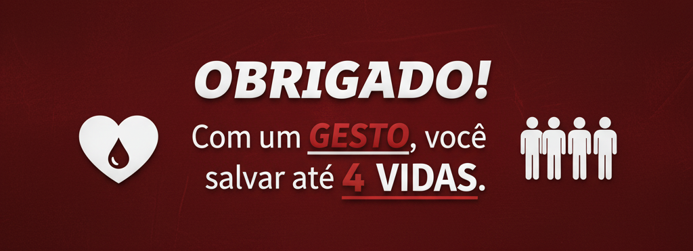

1. Consulte e Cadastre-se
Verifique os pré-requisitos em nossa página e faça seu Cadastro para acompanhar seu histórico e saber onde doar perto de você.
Conectamos a necessidade dos bancos de sangue com o seu desejo de ajudar, criando uma comunidade de doadores regulares e reconhecidos.
Verifique os pré-requisitos em nossa página e faça seu Cadastro para acompanhar seu histórico e saber onde doar perto de você.
Use nosso localizador na página inicial para encontrar o hemocentro mais acessível e se prepare (alimentação e descanso são cruciais!).
Passe pela triagem clínica e faça sua doação. Após o lanche, você já é um Anjo de Sangue! Registre sua doação em seu perfil.

Reconhecemos a sua generosidade. Quanto mais você doa, mais alto é o seu nível de Anjo, garantindo destaque em nossa comunidade e um certificado de honra.
Anjo Iniciante
1 Doação
Recebe Badge Digital e Acesso ao Histórico.
Anjo Protetor
3 Doações
Destaque por 1 Mês na Galeria de Heróis.
Anjo Guardião
5 Doações
Certificado de Honra para Impressão.
Anjo Supremo
Mais de 10 Doações
Entrevista em Destaque no Blog Oficial da ONG.
Nossos projetos sociais dependem de pessoas que, assim como você, querem fazer a diferença. Você pode ajudar na organização de campanhas, na divulgação digital ou no suporte administrativo.
Se você tem habilidades em **design, programação (ADS!), ou eventos**, sua ajuda é preciosa. Envie um email para voluntariado@anjosdesangue.ads e faça parte desta missão!